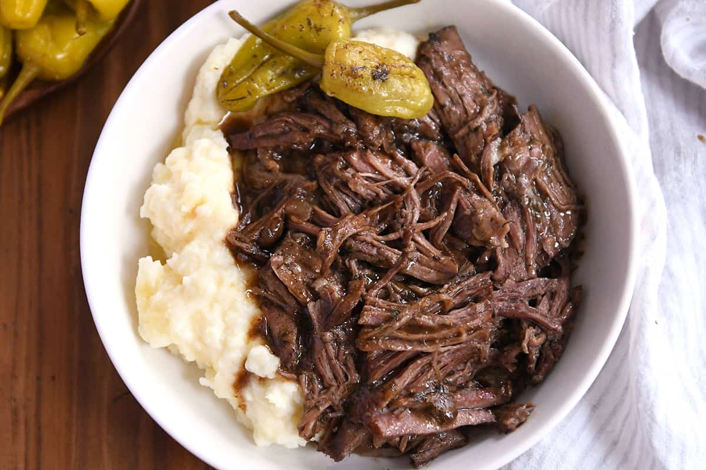

Three Ingredient Pot Roast

A simple yet delicious pot roast!
It doesn't get much easier (or flavorful) than this. Serve Amanda Haas' perfectly tender pot roast over pasta,
with roasted new potatoes, or stuffed into corn tortillas for street tacos.
Ingredients
- 4 pounds of chuck roast, cut into 4-inch chunks
- 2 medium yellow onions, thinly sliced
- 1.25 cups of extra-virgin olive oil
- 2 teaspoons of kosher salt
- Freshly ground black pepper to taste
Steps
- When ready to cook, set the smoker temperature to 400°F and preheat with the lid closed for 15 minutes.
-
Transfer half of the chuck roast to a 3- to 4-quart Dutch oven. Add half of the onions and olive oil and
season with half of the salt and pepper. Top with the remaining chuck, onions, olive oil, salt, and pepper.
Cover the Dutch oven with a tight-fitting lid.
-
Place the Dutch oven on the grill grates. Close the lid and cook for 2-3 hours, until the meat can be easily
shredded with a fork. Reduce the Traeger temperature to 350°F if the rendered fat around the meat is boiling
instead of simmering.
-
Remove the Dutch oven from the grill and uncover. Allow the meat to cool for about 30 minutes, then skim the fat
from the surface. Alternatively, allow the meat to cool to room temperature, transfer to the refrigerator overnight,
then remove the fat cap from the meat before reheating the next day. The pot roast will keep for 2 days in the
refrigerator.
-
To serve, rewarm the pot roast as needed on the stovetop or in a low oven. Serve as desired, such as with Amanda's
Preserved Lemon Gremolata, chimichurri, peperonata, horseradish cream, or a variety of salsas.